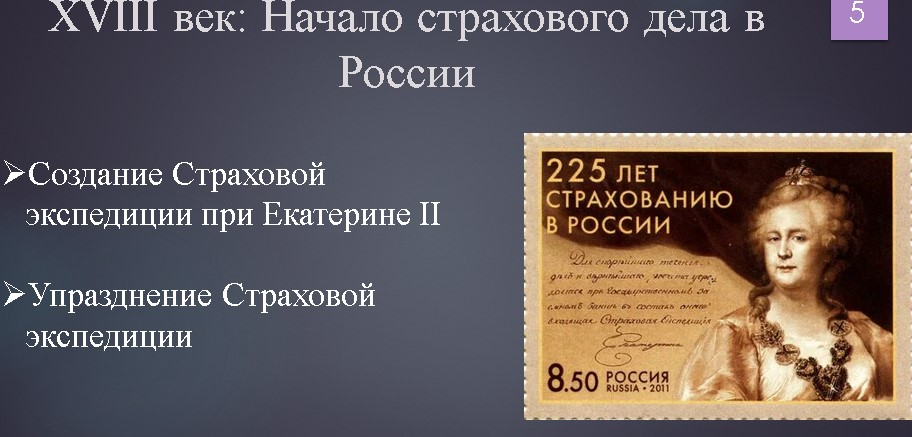
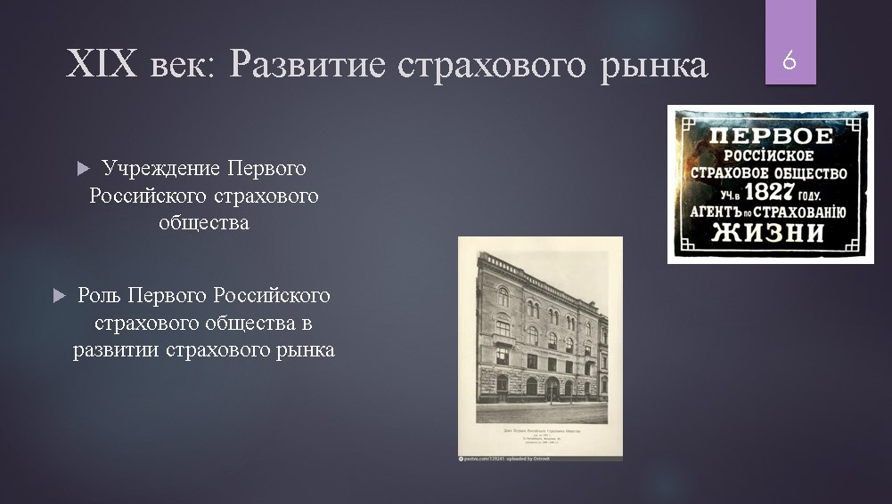

Глава 1. История страховой системы России
1.1 Древние зачатки страхования
Древние формы страхования представляют собой первые попытки общества защититься от рисков и неопределенностей. Эти формы страхования были простыми и часто основывались на взаимопомощи и коллективной ответственности. В данной секции будут рассмотрены некоторые из древних форм страхования, которые легли в основу современной страховой системы.
Упоминание о древних формах страхования
- Талмуд: В древнем Талмуде содержатся правила, которые можно рассматривать как первые формы страхования (Рисунок 1). Например, в Талмуде описываются правила, согласно которым владелец корабля несет ответственность за ущерб, причиненный другим судам или грузам.
- Ордонанс на острове Родос: Этот документ, датируемый VII веком до н.э., содержит правила, регулирующие морское страхование. Ордонанс предусматривал компенсацию за утраченные или поврежденные грузы, что является одним из первых примеров страхования.
Значение древних форм страхования
Древние формы страхования были важными шагами на пути к созданию современной страховой системы. Они показывают, как общества издавна стремились защитить себя от рисков и обеспечить финансовую стабильность. Эти первые шаги в страховании заложили основу для более сложных и разнообразных страховых продуктов, которые мы видим сегодня.
1.2 XVIII век: Начало страхового дела в России
XVIII век стал важным этапом в развитии страховой системы в России. В этот период были предприняты первые шаги к созданию организованной страховой инфраструктуры.
Создание Страховой экспедиции при Екатерине II
- Инициатива Екатерины II: В 1780 году по инициативе Екатерины II была создана Страховая экспедиция. Это было первое государственное учреждение, занимавшееся страхованием в России. Основной целью экспедиции было обеспечение страхования для государственных нужд и поддержка торговли.
- Функции Страховой экспедиции: Экспедиция занималась страхованием судов и грузов, что было особенно важно для развития морской торговли. Она также предоставляла страховые услуги для государственных учреждений и частных лиц.
Упразднение Страховой экспедиции
- Причины упразднения: Несмотря на важность Страховой экспедиции, она была упразднена в 1797 году. Основными причинами стали финансовые трудности и недостаток эффективности в управлении страховыми операциями.
- Влияние на развитие страхового рынка: Упразднение Страховой экспедиции не остановило развитие страхового дела в России. В последующие годы были предприняты новые попытки создания страховых учреждений, что в конечном итоге привело к формированию более устойчивой страховой системы.

1.3 XIX век: Развитие страхового рынка
XIX век стал периодом значительного развития страхового рынка в России. В этот век были созданы первые страховые компании, которые сыграли ключевую роль в формировании современной страховой системы.
Учреждение Первого Российского страхового общества
- Создание общества: В 1827 году было учреждено Первое Российское страховое общество. Это было первое страховое учреждение в России, которое предоставляло страховые услуги на коммерческой основе.
- Основные виды страхования: Общество предлагало страхование имущества, включая страхование зданий, складов и других объектов. Это было особенно важно для защиты от пожаров и других стихийных бедствий.
Роль Первого Российского страхового общества в развитии страхового рынка
- Стимулирование развития страхового рынка: Учреждение Первого Российского страхового общества стало важным шагом в развитии страхового рынка в России. Оно показало пример успешного страхового бизнеса и стимулировало создание других страховых компаний.
- Внедрение новых страховых продуктов: Общество активно внедряло новые страховые продукты, что расширяло спектр услуг, предоставляемых на рынке. Это включало в себя страхование транспорта и страхование жизни.
- Улучшение страховых технологий: Внедрение новых страховых технологий и методов управления рисками помогло повысить эффективность страховых операций и улучшить качество обслуживания клиентов.
